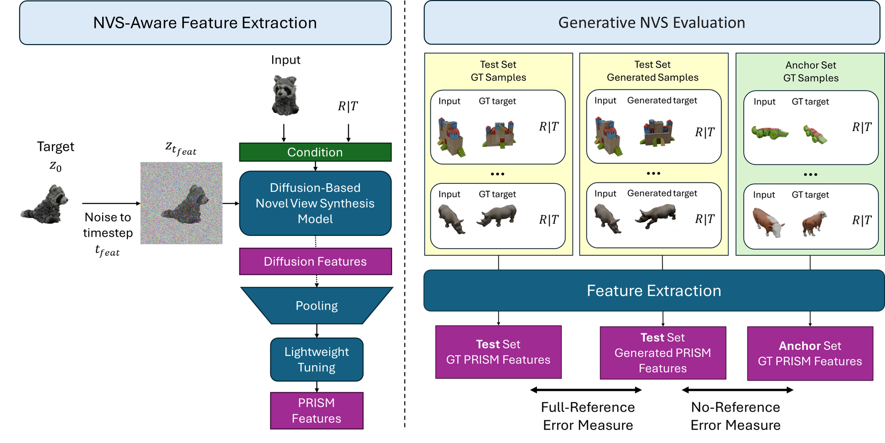

We introduce PRISM, a task-aware evaluation framework for Novel View Synthesis (NVS) that measures whether a generated view is both realistic and faithful to the source image and intended viewpoint transformation. Although diffusion-based NVS models have improved in visual quality, existing metrics often mis-rank incorrect results because they ignore the geometric relationship between source and target views. Our approach leverages viewpoint-aware diffusion features from Zero123 and refines them with a lightweight tuning step, enabling more discriminative and consistent evaluation. We introduce two complementary metrics—one reference-based and one reference-free—that reliably detect incorrect generations and produce stable model rankings aligned with human judgments. Across Toys4K, Google Scanned Objects, and OmniObject3D, our reference-free metric yields clear and meaningful comparisons, with lower scores consistently reflecting stronger NVS models. PRISM provides a principled and practical foundation for evaluating NVS quality and supports more trustworthy progress in novel view synthesis.

Appreciate the View introduces PRISM, a feature-based evaluation method tailored to novel view synthesis. Our approach embeds the source image, the generated target view, and the intended viewpoint transformation using pose-aware diffusion features from a strong NVS backbone. A lightweight tuning step sharpens these features so they reflect whether the output is consistent with the source–target geometry. From this representation, we derive both a reference-based score and a reference-free score that quantify synthesis quality in a stable, viewpoint-aware manner. This allows PRISM to distinguish plausible views from incorrect ones and to produce model rankings that closely align with human judgments.
We present a region-dependent denoising strategy. Previous methods have limitations: SDEdit either suppresses dynamics in unmasked regions (at low noise levels) or drifts from the prescribed motion (at high levels). RePaint, on the other hand, enforces motion by overriding the foreground, but often introduces artifacts in uncontrolled regions and rigid motion in controlled regions. We propose a dual-clock method where masked regions follow the intended motion with strong fidelity, while the rest of the scene denoises more freely. This flexible approach yields realistic dynamics without artifacts.
Examples of user-specified object control. The user selects one or more regions of interest in an image using a mask and defines their trajectories. The masked regions are then dragged across all frames to produce a coarse, warped version of the intended object animation. Finally, TTM, integrated with the Wan 2.2 video model, generates a high-quality, dynamic video that accurately reflects the user’s intent.
Warped | Ours
Examples of user-specified camera control from a single image. From any input image, we first estimate its depth and, given a user-defined camera trajectory, generate a warped video of the original frame as viewed from each new viewpoint. Any resulting holes are filled using nearest-neighbor colors, producing a coarse initial video that approximates the desired camera motion. Finally, TTM synthesizes a realistic video that accurately follows the specified camera path.
Warped | Ours
Warped | Ours
Warped | Ours
Warped | Ours
Examples of user-specified object and appearance control. Our method enables both the insertion of new objects from outside the original image and the modification of an existing object’s appearance, such as changing its color or shape. Accordingly, a coarse, warped version of the intended object animation—including the desired appearance changes—is first generated and then fed into a TTM-based model that synthesizes the output video.
Warped | Ours
Warped | Ours
Warped | Ours
Warped | Ours
Warped | Ours
Warped | Ours
Comparison of our method with the training-based state-of-the-art approach Go-with-the-Flow (GWTF) [1] on user-specified object control tasks.
Comparison of our method on user-specified camera control tasks.
@misc{singer2025timetomovetrainingfreemotioncontrolled,
title={Time-to-Move: Training-Free Motion Controlled Video Generation via Dual-Clock Denoising},
author={Assaf Singer and Noam Rotstein and Amir Mann and Ron Kimmel and Or Litany},
year={2025},
eprint={2511.08633},
archivePrefix={arXiv},
primaryClass={cs.CV},
url={https://arxiv.org/abs/2511.08633},
}